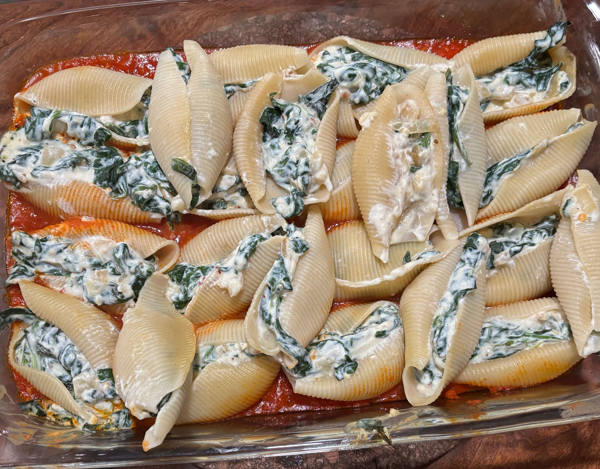

Home
Stuffed Shells

4 servings
Prep time:30 min, cook time:30 min
Ingredients
- 18 to 20 jumbo pasta shells
- Extra-virgin olive oil, for drizzling
- 5 ounces fresh spinach
- 1 chopped yellow onion
- 2 cups ricotta cheese, 16 ounces
- ¼ cup grated parmesan cheese, plus more for sprinkling
- 2 garlic cloves, grated
- 1 teaspoon dried oregano
- 1 teaspoon lemon zest
- ¼ teaspoon red pepper flakes
- ¾ teaspoon sea salt, plus more for the pasta water
- Freshly ground black pepper
- 2 cups Marinara Sauce*, plus more for serving
- Chopped fresh parsley, for serving
Steps
- Preheat the oven to 425°F.
- Place the chopped onion in a pan with a little oil. Add in spinach until it is wilted.
- In a large pot of salted boiling water, cook the pasta shells for 10 minutes, until al dente. Drain and drizzle with a little olive oil to keep them from sticking together.
- In a medium bowl, combine the spinach and onion with the ricotta, parmesan, garlic, oregano, lemon zest, red pepper flakes, salt, and several grinds of pepper.
- Spread the marinara in the bottom of a 9x13 baking dish. Stuff each shell with the filling and place in the dish. Cover with foil and bake for 20 minutes. Serve with more marinara on the side.
This recipe freezes well! After you've assembled the shells in the baking dish, cover with foil and freeze. To thaw, transfer the dish to the fridge about 10 hours before you plan to serve (i.e. the morning that you plan to serve them for dinner). Remove from the fridge and let sit at room temp while the oven preheats. Bake, covered, for 30 minutes, or until thawed and warmed through.